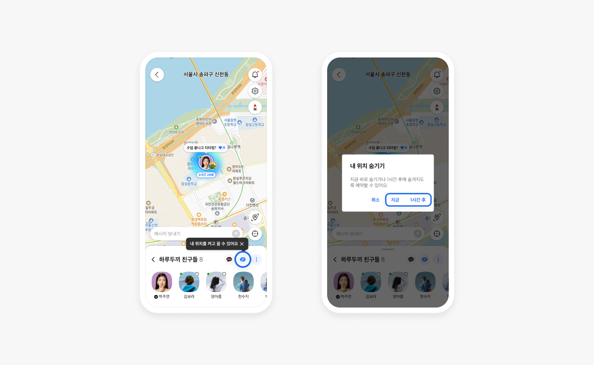
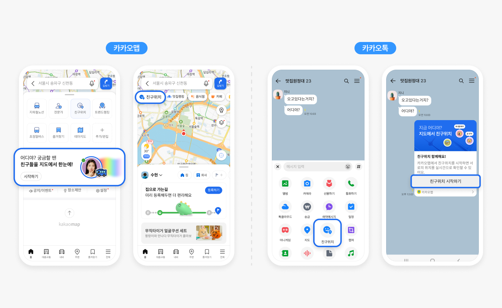
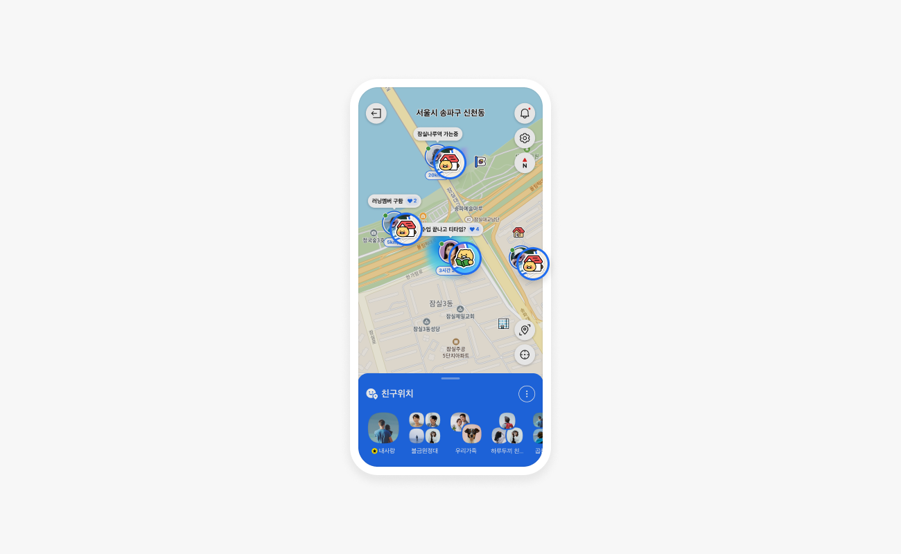
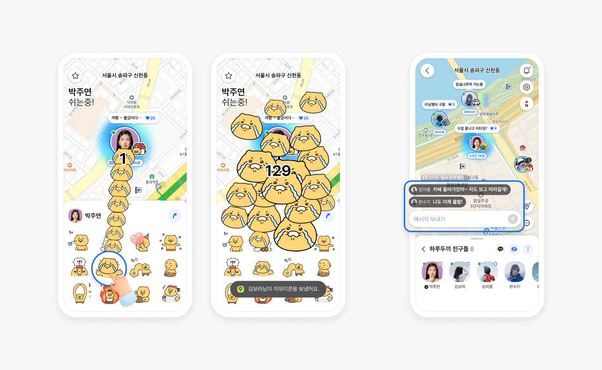

카카오맵 친구위치
지도에 더해진 소셜 기능 분석
배진혁 20231675

선정 이유와 기능 소개
친구의 위치·이동·머문 시간을 함께 봐요
근처에 지인이 있다는 걸 알고 만나러 간 적이 있어요
데이트 약속이나 친구 모임에서 서로 어디쯤인지 확인했어요
길 찾기를 넘어, 떨어져 있어도 친구와 함께하는 느낌
Tier 1 · 도입 배경

위치 확인에 시각화와 소통의 재미를 더했어요
2019년 ‘톡친구 위치공유’를 2025.11.12 ‘친구위치’로 개편했어요
위치·상태를 시각화하고 채팅·이모티콘으로 소통해요
친구와의 소통이 일상에서 지도를 다시 열 동기가 될 수 있어요
Tier 2 · 이용 흐름


Tier 3 · 기존 관계망의 활용
익숙한 카카오톡에서 친구위치로 이어져요
카카오톡 친구나 채팅방에 초대해 함께 시작해요
초대에 동의하면 익숙한 프로필로 지도에서 만나요
지도와 소통을 연결해 카카오 서비스를 함께 쓸 이유가 늘 수 있어요
5요인 종합 평가
정보 제공과 사회적 상호작용이 중심이에요
| 평가 요인 | 평가 | 해석 근거 |
|---|---|---|
| 정보 제공 | 강함 | 공유한 위치를 보고 연락하거나 약속을 맞출 수 있어요 |
| 신뢰 | 보통 | 아는 친구의 위치를 확인할 수 있지만, 위치 정확성까지 검증한 것은 아니에요 |
| 사회적 상호작용 | 강함 | 지도 채팅·말풍선으로 위치를 보며 대화하고 반응을 주고받아요 |
| 몰입(Flow) | 약함 | 위치를 확인하고 약속을 맞추는 목적 중심 흐름으로 봤어요 |
| 정서적 만족 | 보통 | 친구와 연결된 느낌은 있지만, 계속 위치가 공유되는 건 가끔 불편했어요 |
위치 정보와 대화로 만남을 돕는 실용형 소셜 기능으로 봤어요.
강약은 기능과 개인 경험에 대한 상대평가이며, 이용자 전체의 효과를 측정한 결과는 아니에요.
한계점 · 위치 공개의 부담
공개 조사 · 위치 공개의 선택
Harris Poll · 미국 · 2022
추적을 원하지 않음
일부 시간에만 필요
기기 위치 기능 전반 · 해당 문항 764명
가중 비율 · 복수응답
eSafety · 호주 · 2024
동의·매우 동의
성인 2,046명 · 위치추적 기대에 대한 태도
실제 추적률·피해율이 아님
서로 다른 대상·문항의 조사예요. 수치 간 직접 비교나 카카오맵 이용자 비율로 해석할 수 없어요.
개선 제안 · 필요한 이유
위치 공개 설정
친구와 연결은 유지하고
필요한 순간에만 위치를 보여줘요
기존 공유 방식은 설정에서 선택
연결의 편리함과 공개 관리의 부담을 나눠 봐요
친구와 위치를 보며 만남을 조율하는 건 편리해요
공유를 멈출 시점을 계속 챙겨야 할 수 있어요
연결은 유지하면서 공개를 관리하는 수고를 덜고 싶어요
개선 제안 · 목업
위치 공개 설정
친구위치 이용을 마치면
위치 공유도 자동으로 멈춰요
기존 공유 방식은 설정에서 선택
필요한 이용 순간에 위치 공개를 맞춰요
‘이용 중에만 공유’를 선택해 시작해요
친구위치를 나가면 위치 갱신을 멈추는 방식이에요
지금 공유 중인지, 언제 끝나는지 분명히 알려줘요
결론
친구와는 가깝게,
위치 공개는 필요한 만큼
친구위치는 위치 정보와 친구의 존재감을 통해 만남을 돕는 소셜 기능이에요.
이용 중 공유로, 연결의 편리함과 공개를 조절하는 편안함을 함께 제안해요.
참고 1 · 공식 자료
도입 목적 · 공개 통제 · 그룹 규격
2019.11.04: 위치공유 도입 목적
2025.11.12: 친구위치 개편·숨기기·예약
2026.04.21 / 07.24: 시간그룹·최대 30명 링크 그룹
참고 2 · 공개 조사
조사 대상·문항의 차이
Harris·NYT(2022): 미국의 기기 위치 기능 비활성화 이유
eSafety(2024): 호주 성인의 연인 위치 추적 기대 태도
카카오맵 이용자 비율 및 제안 효과를 측정한 자료가 아님
참고 3 · 연구와 설계
수업 사례의 평가 기준 · 연구 · 사용자 경험
수업 사례의 평가 기준: 정보 제공·신뢰·사회적 상호작용·몰입·정서적 만족
Tsai 외(CHI 2009): 제공 불가 사유를 구별하지 않는 설계 선례
공식 예시·비공식 목업과 개인 사용 기록의 구분